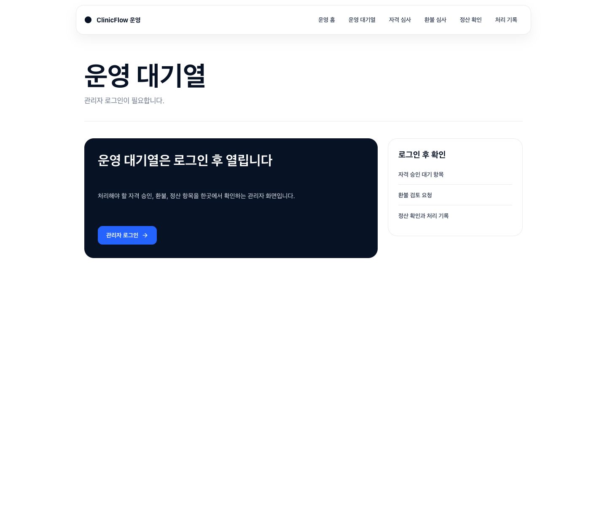
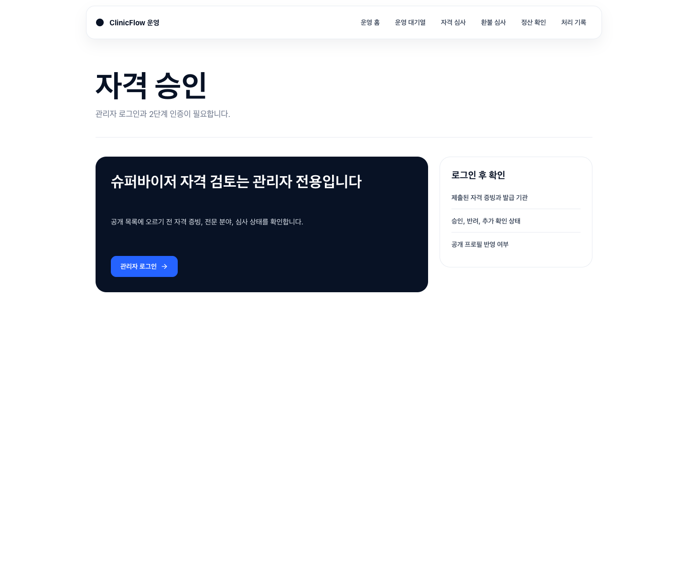
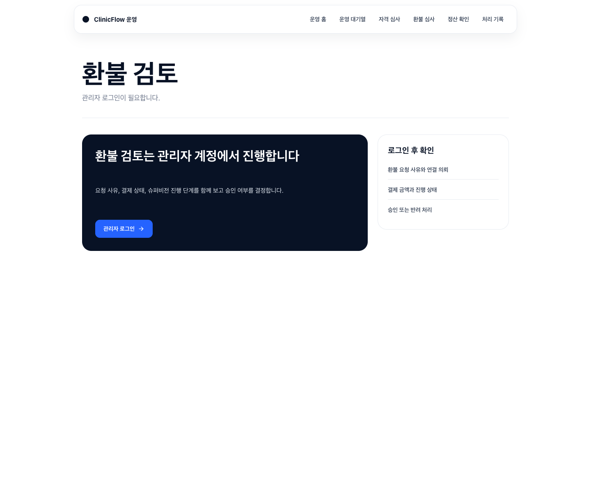

36-admin-root /

ClinicFlow 운영 운영 홈 운영 대기열 자격 심사 환불 심사 정산 확인 처리 기록 운영 홈 관리자 로그인과 2단계 인증이 필요합니다. 운영 업무는 관리자 계정에서 이어집니다 자격 승인, 환불, 정산, 처리 기록은 관리자 권한이 확인된 뒤 열립니다. 관리자 로그인 로그인 후 확인 오늘 먼저 확인할 운영 대기열 자격 승인, 환불, 정산 상태 처리 기록과 운영 조치 내역
37-admin-home /admin
ClinicFlow 운영 운영 홈 운영 대기열 자격 심사 환불 심사 정산 확인 처리 기록 운영 홈 관리자 로그인과 2단계 인증이 필요합니다. 운영 업무는 관리자 계정에서 이어집니다 자격 승인, 환불, 정산, 처리 기록은 관리자 권한이 확인된 뒤 열립니다. 관리자 로그인 로그인 후 확인 오늘 먼저 확인할 운영 대기열 자격 승인, 환불, 정산 상태 처리 기록과 운영 조치 내역
38-admin-queue /admin/queue

ClinicFlow 운영 운영 홈 운영 대기열 자격 심사 환불 심사 정산 확인 처리 기록 운영 대기열 관리자 로그인이 필요합니다. 운영 대기열은 로그인 후 열립니다 처리해야 할 자격 승인, 환불, 정산 항목을 한곳에서 확인하는 관리자 화면입니다. 관리자 로그인 로그인 후 확인 자격 승인 대기 항목 환불 검토 요청 정산 확인과 처리 기록
39-admin-qualifications /admin/qualifications

ClinicFlow 운영 운영 홈 운영 대기열 자격 심사 환불 심사 정산 확인 처리 기록 자격 승인 관리자 로그인과 2단계 인증이 필요합니다. 슈퍼바이저 자격 검토는 관리자 전용입니다 공개 목록에 오르기 전 자격 증빙, 전문 분야, 심사 상태를 확인합니다. 관리자 로그인 로그인 후 확인 제출된 자격 증빙과 발급 기관 승인, 반려, 추가 확인 상태 공개 프로필 반영 여부
40-admin-refunds /admin/refunds

ClinicFlow 운영 운영 홈 운영 대기열 자격 심사 환불 심사 정산 확인 처리 기록 환불 검토 관리자 로그인이 필요합니다. 환불 검토는 관리자 계정에서 진행합니다 요청 사유, 결제 상태, 슈퍼비전 진행 단계를 함께 보고 승인 여부를 결정합니다. 관리자 로그인 로그인 후 확인 환불 요청 사유와 연결 의뢰 결제 금액과 진행 상태 승인 또는 반려 처리
41-admin-payouts /admin/payouts
ClinicFlow 운영 운영 홈 운영 대기열 자격 심사 환불 심사 정산 확인 처리 기록 정산 요약 관리자 로그인이 필요합니다. 정산 관리는 관리자 권한이 필요합니다 완료된 슈퍼비전의 지급 예정액과 보류 사유를 확인하는 운영 화면입니다. 관리자 로그인 로그인 후 확인 정산 예정 금액과 지급 상태 슈퍼바이저별 지급 내역 정산 계산과 보류 사유
42-admin-audit /admin/audit
ClinicFlow 운영 운영 홈 운영 대기열 자격 심사 환불 심사 정산 확인 처리 기록 처리 기록 관리자 로그인이 필요합니다. 처리 기록은 관리자 로그인 후 확인합니다 운영 조치와 자료 접근 기록을 필요한 범위 안에서 다시 확인하는 화면입니다. 관리자 로그인 로그인 후 확인 관리자 조치 기록 자료 접근 기록 운영 확인을 위한 검색과 필터
43-admin-payouts-alias /payouts

ClinicFlow 운영 운영 홈 운영 대기열 자격 심사 환불 심사 정산 확인 처리 기록 정산 요약 관리자 로그인이 필요합니다. 정산 관리는 관리자 권한이 필요합니다 완료된 슈퍼비전의 지급 예정액과 보류 사유를 확인하는 운영 화면입니다. 관리자 로그인 로그인 후 확인 정산 예정 금액과 지급 상태 슈퍼바이저별 지급 내역 정산 계산과 보류 사유
44-admin-refunds-alias /refunds

ClinicFlow 운영 운영 홈 운영 대기열 자격 심사 환불 심사 정산 확인 처리 기록 환불 검토 관리자 로그인이 필요합니다. 환불 검토는 관리자 계정에서 진행합니다 요청 사유, 결제 상태, 슈퍼비전 진행 단계를 함께 보고 승인 여부를 결정합니다. 관리자 로그인 로그인 후 확인 환불 요청 사유와 연결 의뢰 결제 금액과 진행 상태 승인 또는 반려 처리